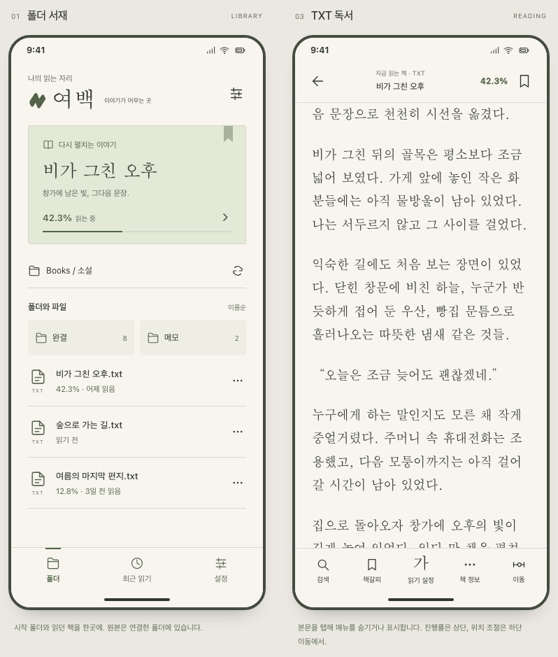
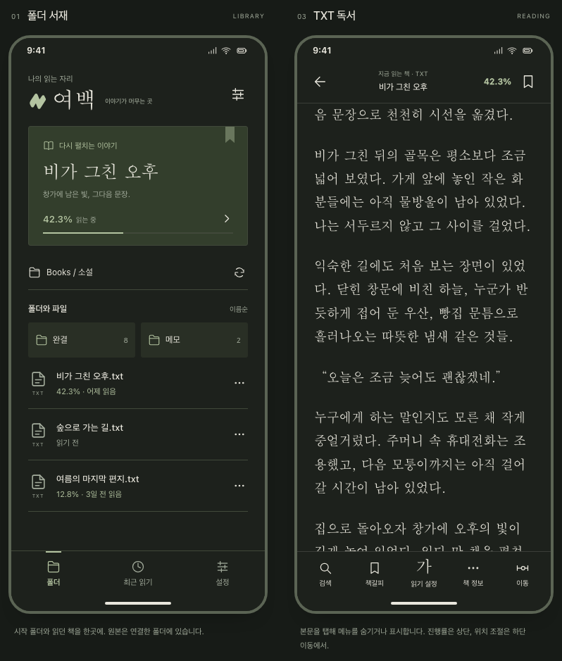

01 / DAYLIGHT
낮의 종이
따뜻한 미색과 올리브.
가볍고 조용한 읽는 자리.

PAPER #F8F5EFINK #30372FOLIVE #536348
02 / AFTER DARK
밤의 종이
따뜻한 먹색과 옅은 올리브.
문장의 온도는 그대로.

PAPER #1D211CINK #E9E7DDOLIVE #B4C4A1
따뜻한 미색과 올리브.
가볍고 조용한 읽는 자리.

따뜻한 먹색과 옅은 올리브.
문장의 온도는 그대로.
